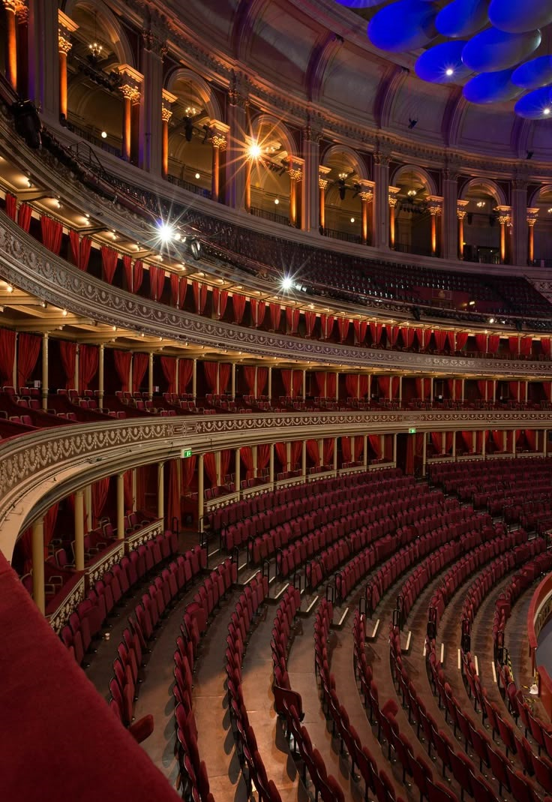
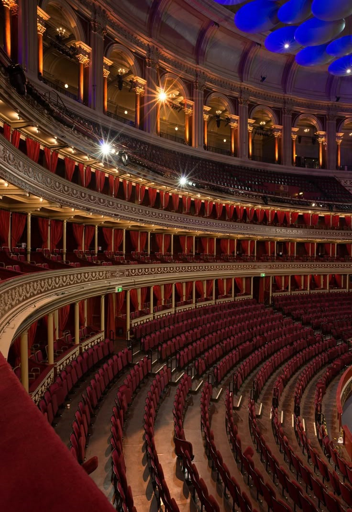

The Colorado Symphony Cello Ensemble
Thu, Oct 10, 7:30 PM
Members of our talented cello section showcase the depth and versatility of the instrument, featuring an array of classical masterpieces and contemporary compositions.
Colorado Symphony Chamber Ensemble at Steamboat Art Museum
Sat, Oct 12, 7:00 PM
Join us as we head to Steamboat Springs for an eclectic evening of chamber music at the Steamboat Art Museum on October 12, 2024.
Chris Thile with the Colorado Symphony
Sat, Oct 12, 7:30 PM
Chris Thile’s brand-new work for mandolin, vocals, and orchestra — Attention! — will feature his trademark whimsical songwriting and storytelling, instrumental virtuosity, and ever-present sense of humor.
Verdi Requiem: 40th Anniversary Celebration of the Colorado Symphony Chorus
Fri, Oct 18, 7:30 PM
Sat, Oct 19, 7:30 PM
Sun, Oct 20, 1:00 PM
Celebrate the 40th Anniversary of the world-renowned Colorado Symphony Chorus with a renewal of Verdi’s monumental Requiem.
Disney in Concert: Tim Burton's The Nightmare Before Christmas
Fri, Oct 25, 7:30 PM
Sat, Oct 26, 7:30 PM
The Nightmare Before Christmas will be projected on the big screen with dialogue, singing, and effects accompanied by Danny Elfman’s darkly charming score played live by your Colorado Symphony.
Halloween Spooktacular!
Sun, Oct 27, 2:30 PM
It’s a spooktacular event for all boys and ghouls! This family-favorite concert features music from films, television, and more!
FINAL FANTASY VII REBIRTH Orchestra World Tour
Fri, Nov 1, 7:30 PM
Sat, Nov 2, 7:30 PM
AWR Music Productions and Square Enix are proud to introduce FINAL FANTASY VII REBIRTH Orchestra World Tour, an electrifying new concert based entirely on the groundbreaking game from SQUARE ENIX.
Rachmaninoff Piano Concerto No. 2 with Simon Trpceski
Fri, Nov 8, 7:30 PM
Sat, Nov 9, 7:30 PM
Sun, Nov 10, 1:00 PM
Experience an unforgettable evening as the Colorado Symphony and Principal Conductor Peter Oundjian showcase iconic works by Rachmaninoff and Mahler.
Béla Fleck Plays Gershwin's Rhapsody in Blue
Sat, Nov 16, 7:30 PM
Sun, Nov 17, 1:00 PM
Experience a groundbreaking musical fusion as banjo great Béla Fleck takes center stage alongside the Colorado Symphony for a captivating rendition of George Gershwin’s iconic Rhapsody in Blue.
Saint-Saëns Organ Symphony with Christopher Dragon
Fri, Nov 22, 7:30 PM
Sat, Nov 23, 7:30 PM
Sun, Nov 24, 1:00 PM
Saint-Saëns Organ Symphony with Christopher Dragon With Time for Three in town and ever-energetic Resident Conductor Christopher Dragon at the helm, this is Classical at its most current.

 
